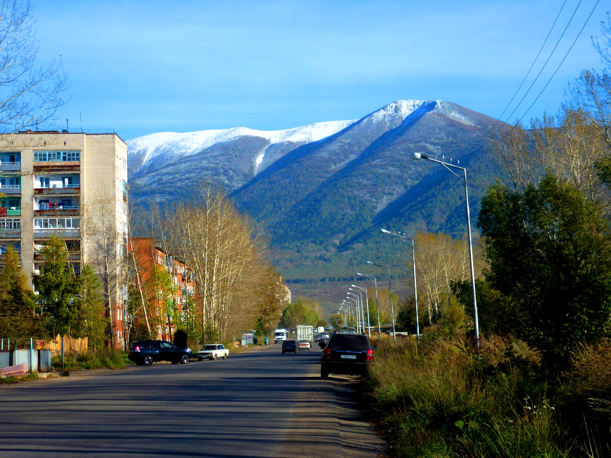
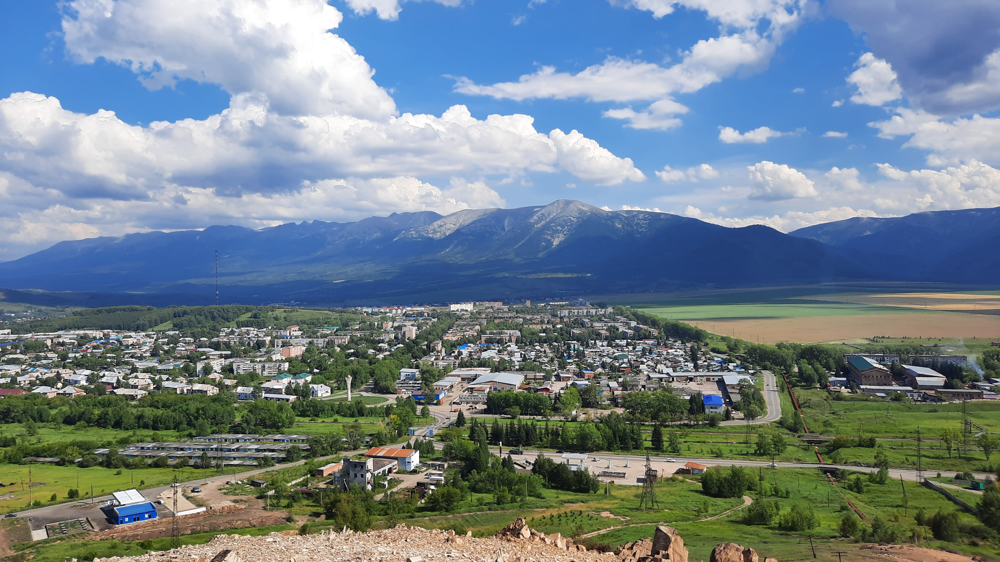
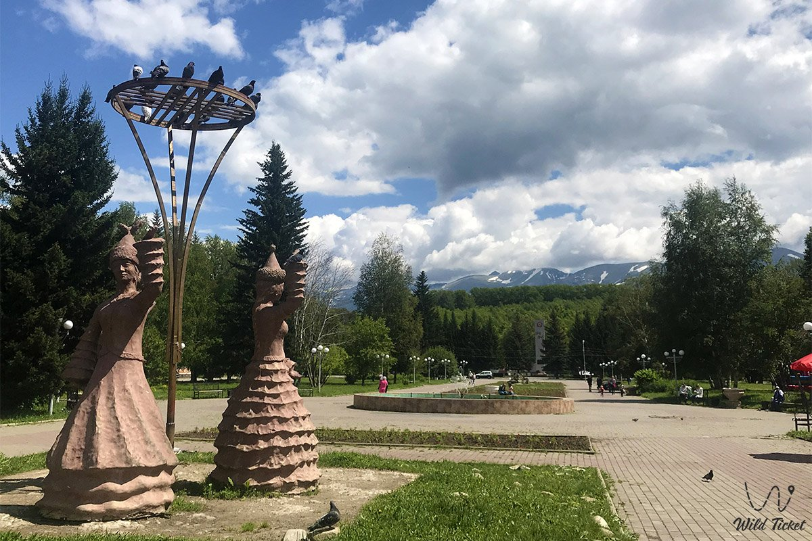

Большинство людей знают Риддер как промышленный город с заводами и рудниками. Это правда — но неполная. За металлургическими предприятиями скрывается город у подножья Ивановского хребта, окружённый горными реками и сосновым лесом, с историей в 240 лет и природой, до которой всё ещё не добираются туристические автобусы.
История: рудник, который стал городом
Всё началось с указа Екатерины II — найти руды и минералы на Алтае. В начале мая 1786 года на поиски было отправлено девять экспедиций. Одну из них возглавил 27-летний горный офицер Филипп Риддер.
31 мая 1786 года его партия обнаружила в верховьях реки Ульбы богатейшее месторождение — золото, серебро, свинец, цинк. Летом того же года были поставлены первые постройки. Поселение назвали Риддерским рудником. Так появился город, который сейчас носит имя своего первооткрывателя — хотя ни одного прижизненного портрета Филиппа Риддера не сохранилось.
1786 — открытие месторождения, основание рудника.
1920-е — Риддер становится одним из ключевых центров цветной металлургии Казахстана.
1932 — статус города.
1941 — переименован в Лениногорск. В годы Великой Отечественной город поставлял свинец для боеприпасов.
2002 — возвращено историческое название Риддер.
Любопытный факт: Риддер расположен всего в 60 километрах от границы с Россией, что в своё время делало его стратегически важным объектом. В окрестностях города находятся одни из наиболее протяжённых подземных горных выработок в Казахстане — сотни километров штолен и тоннелей.

Малоульбинское водохранилище: война и вода
Отдельная страница истории Риддера — Малоульбинское водохранилище в горах над городом. Его строили в начале XX века, а в годы Великой Отечественной оно обеспечивало Лениногорск водой и электроэнергией. Город, в свою очередь, снабжал фронт свинцом для боеприпасов — эта цепочка делала водохранилище стратегическим военным объектом.
Строили его в тяжелейших условиях высокогорья. Первая плотина сохранилась до сих пор — по ней можно пройти и оценить масштаб сооружения. По дороге к водохранилищу встречаются заброшенные деревни, основанные ещё до появления самого Риддера. Сегодня это один из наших маршрутов — история и природа в одном выезде.



Природа: не масштаб, а характер
Горы вокруг Риддера — это не Катон-Карагай с его широкими панорамами и альпийскими лугами. Здесь другое: плотная тайга, узкие ущелья, горные реки с хариусом, серпантины на которые не решается обычный автомобиль. Природа здесь не величественная в открыточном смысле — она дикая и нетронутая.
Несмотря на близость металлургических заводов, горные реки в окрестностях города — Тихая, Громотуха, Быструха, Журавлиха — получают стабильно высокие оценки по качеству воды. Это Алтай: даже рядом с промышленным городом природа умудряется оставаться чистой.
В радиусе 25 километров от Риддера находится Радоновое озеро на высоте 1906 метров, маршруты к Ивановскому хребту и авторские тропы, которые не нанесены ни на один навигатор. Именно отсюда мы выезжаем на все наши туры.
Туристический потенциал: в начале пути
Риддер — не курорт и не туристическая мекка. Здесь нет инфраструктуры Шымбулака, нет толпы и нет раскрученных маршрутов. Именно поэтому он интересен.
В последние годы местные власти активно вкладываются в туристическую инфраструктуру, поддерживают малый бизнес в этой сфере и системно работают над развитием потенциала города. Туризм не перекроет промышленность по масштабу — это понятно всем. Но в туристическом направлении Риддер может стать уникальным именно потому, что здесь ещё не всё освоено и застроено.
Тренд на дикий, немассовый туризм только усиливается. Люди устают от переполненных курортов и ищут места с настоящей природой, без толп и предсказуемых маршрутов. У Риддера есть всё что для этого нужно — не хватало только операторов с правильным подходом и подготовленной техникой.
Частые вопросы
Увидеть Риддер изнутри
Мы базируемся здесь — и знаем эти горы лучше любого путеводителя
Выбрать тур →